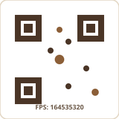

奉獻支持
「各人要隨本心所酌定的，不要作難，不要勉強，因為捐得樂意的人是神所喜愛的。」(林後 9:7)
轉數快
透過轉數快繳納奉獻。
快速支付系統識別碼 (FPS ID)
164535320
戶名：五旬節聖潔會迦福堂有限公司

銀行轉帳 / 支票
可經銀行轉賬，或使用東亞銀行入票機存入支票。
東亞銀行 (Bank of East Asia)
256-68-05598-8
戶名：五旬節聖潔會迦福堂有限公司
(Ka Fook Pentecostal Holiness Church Ltd.)
(Ka Fook Pentecostal Holiness Church Ltd.)
支票抬頭請寫「五旬節聖潔會迦福堂有限公司」，支票背後請註明姓名、聯絡電話及奉獻項目。